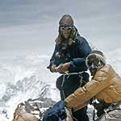
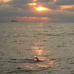
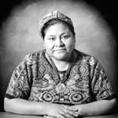
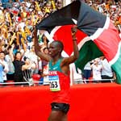
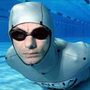

Famous Feats!
Return HomeHere is a page where you can view other people's famous feats
|  | First Mt. Everest Ascent!Mount Everest (8,848 m 29,029 ft) was first climbed at 11:30 a.m. on 29 May 1953, when the summit was reached by Edmund Percival Hillary (New Zealand), and Sherpa Tenzing Norgay. The successful expedition was led by Col. (later Hon. Brigadier) Henry Cecil John Hunt. |
|  | First Person to Swim the English Channel!The first to swim the English Channel from shore to shore (without a life jacket) was the Merchant Navy captain Matthew Webb (UK, 1848-83) who swam an estimated 61 km (38 miles) to make the 33-km (21-mile) crossing from Dover, England to Calais Sands, France, in 21 hr 45 min from 12:56 p.m. to 10:41 a.m. on 24-25 August 1875. Paul Boyton (USA) had swum from Cap Gris-Nez to the South Foreland in his patent life-saving suit in 23 hr 30 min on 28-29 May 1875. There is good evidence that Jean-Marie Saletti, a French soldier, escaped from a British prison hulk off Dover by swimming to Boulogne in July or August 1815.The first crossing from France to England was made by Enrico Tiraboschi, a wealthy Italian living in Argentina, in 16 hr 33 min on 12 August 1923, to win the Daily Sketch prize of œ1000. As of May 1997, there had been 6,406 attempts to swim the Channel by 4,412 people. Of these, 505 individuals (342 men and 163 women) from 42 countries have made 768 successful crossings; 733 solo, 22 double and 3 triple. |
|  |
Youngest Person to Win the Nobel Peace Prize!In 1992, Rigoberta Menchú Tum (Guatemala), born in 1959, was awarded the Nobel Peace Prize, "in recognition of her work for social Justice and ethnocultural reconciliation based on respect for the rights of indigenous people." At age 33, she was the first indigenous and the youngest person ever to receive this honour.Rigoberta Menchú Tum was born in the Mayan village of Chimel. Her mother, father and brother all were killed during a time of political upheaval in Guatemala. As a result, she became an active political worker in labor and human rights groups. Rigoberta Menchu's efforts for simple and basic human rights for the indigenous and aboriginal Indians of Guatemala established her as one of the premier advocates of peace. She used the $1.2 million Nobel Prize to erect an organization in her father's name whose mission is to fight for human rights. |
|  | Most Wins for World MarathonKenyan distance runner Samuel Wanjiru is the only male athlete to have won the World Marathon Majors series more than once, finishing top of the leaderboard with 90 points in 2008–09 and with 75 points in 2009–10.Inaugurated in 2006, the World Marathon Majors is a competition that encompasses the five annual marathon races in Boston (USA), Berlin (Germany), Chicago (USA), London (UK) and New York City (USA), with athletes scoring points for top five finishes, over two calendar years. The World Championship and Olympic marathons are also included in the years that they are run. The winner of the first men’s championship, in 2006–07, was Robert Cheruiyot (Kenya), with 80 points; the winner in 2007–08 was Martin Lel (Kenya) with 76 points. |
|  |
The Longest Distance Swam UnderwaterThe longest distance swam underwater with one breath is 200 m (656 ft 2 in) and was achieved by Tom Sietas (Germany) in Beijing, China, on the set of Zheng Da Zong Yi: Guinness World Records Special, CCTV Studios, Beijing, China, on 6 November 2008 |